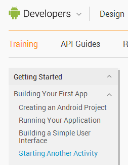
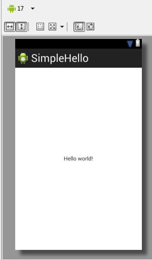
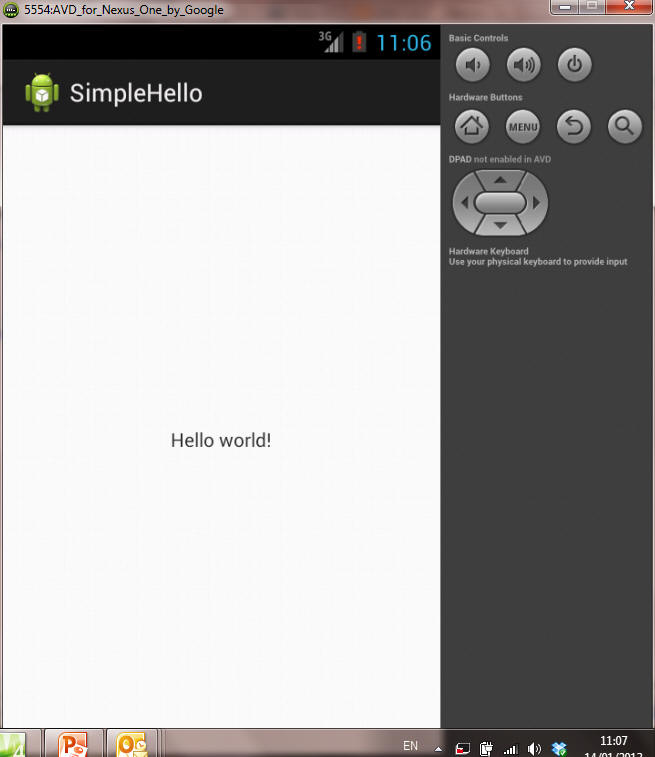
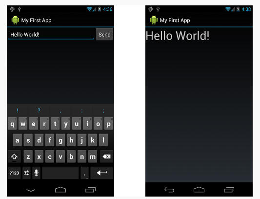
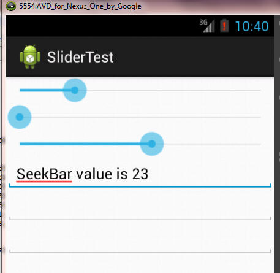

Introduction
The aim of this lab is to gain familiarity with using a Java IDE together with the Android development tools. You are assumed to be familiar with Java and Java IDEs in general, and ideally with Eclipse or Intellij in particular. If not then seek assistance from the lab or module supervisor.
The lab will work through some standard training tutorials from the Android Developer site, set some related exercises for you to complete and then finish with a quiz to test your understanding of the material covered.
This lab will introduce the following concepts:
- Building and running a hello world program
- Editing XML files to create a GUI
- Using Layouts (these are containers that arrange other components - their children). In particular we'll experiment with LinearLayout's
- Setting LinearLayout parameters such as width and weight to achieve desired effects
- Hooking up events to make GUI components actually do something.
- Using Intents to invoke other Activities
First App
Work through the steps: First App
For this lab, the most important steps are the first three: Creating an Android Project, Running Your Application and Building a Simple User Interface. The Starting Another Activity complicates things a bit by introducing Intents which we'll cover in more depth later.

- Note: when creating the project, it is only necessary to do this using an IDE (Eclipse), the part using command line tools is optional, though may be useful for those rare cases where the IDE does not do what you need.
When creating the app, the expected initial view is shown in the Graphical Layout pane: you can use this to drag and drop new components, which will auto-update the XML layout file. For example, I called my App "SimpleHelloWorld", and after going through the create menues in Eclipse it looked like this:

Now, specify a virtual device and run the App on it: you should get something like this:

Question: note that the TextView says "Hello world!". Where is this string declared?
Work through the rest of the tutorial lab and ensure that everything works as expected. You should end up with an App that calls another App like this:

Exercise: SeekBars
The exercise for this lab is to create an app that looks like the one below: each SeekBar (the slider) is hooked up to a text field (in this case I used EditText components) so that as the slider is moved, a value in the text field is updated.

The components should be arranged using LinearLayouts (I'll leave the choice of how to do this to you).
We've not covered how to do listen for events from a SeekBar component, but I want you to practice searching for the information: try a Google search on "Android Seekbar Example". By default the values returned by a SeekBar range from 0 to 100. Demonstrate your solutions when you're ready.
Quiz
You should attempt all the questions in the following quiz. You can find some of the answers in the lab work you've already done: some others you may need to search for.
- Which XML file specifies the name of the App?
- Which XML file specifies the components and layout of the GUI? In which folder is the file located?
- What are the strengths and weaknesses of specifying GUI layouts in XML versus in the app's Java code?
- What does the "@" specify in an XML attribute? (android:text="@string/hello_world")
- What does the "@+" specify? (e.g. android:id="@+id/seekBar1")
- When using a LinearLayout when does it make sense to set the width or the height to 0dp?
- When specifying the width or the height of a component what do "match_parent" and "wrap_content" mean?
- What does DDMS stand for?
- What is the origin of the Java code in the gen directory, and why should you never edit it directly?
- Why should you start an AVD (Android Virtual Device) at the start of a programming session and then leave the device running?
end of page